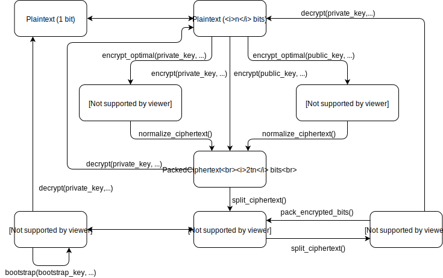

Manual
Data flow
The FHE scheme operates with several different representations of ciphertexts, each having its advantages and disadvantages. The scheme below shows the possible transformations between them and can be used as a quick reference.

In the examples in this section we will assume that the following modules are imported:
using Random
using SGFHEPrivate key encrpytion
We will start with generating a private key use it to encrypt and then decrypt some data. Data can only be encrypted in blocks of size n, which is the polynomial length passed to the Params constructor.
The simplest variant is to encrypt a single bit:
rng = MersenneTwister()
params = Params(64)
key = PrivateKey(params, rng)
bits = rand(Bool, params.n)
encrypted_array = encrypt(key, rng, bits)
decrypted_bits = decrypt(key, encrypted_array)
@assert bits == decrypted_bits
# output
Here we used 64 as the polynomial length in the FHE scheme. The polynomial length must be a power of 2 greater than 64, and the larger it is, the more secure the encryption is (and, naturally, the slower it is, too).
We need to create an RNG and pass it to some functions explicitly. All functions that in some way use randomness take an RNG as a parameter, and it is the user's responsibility to assure that it is cryptographically secure (the default Julia one, MersenneTwister, isn't, and is only used here for demonstration purposes).
The resulting ciphertext has the expansion coefficient of 2t, where t is the bit size of the integer type used (which is chosen to be able to fit numbers up to 16n, where n is the polynomial length, see the corresponding theory section for details).
There is a more efficient representation possible, with the expansion coefficient of only 6. It cannot be decrypted directly, and must be normalized first:
rng = MersenneTwister()
params = Params(64)
key = PrivateKey(params, rng)
bits = rand(Bool, params.n)
encrypted_array = encrypt_optimal(key, rng, bits)
decrypted_bits = decrypt(key, normalize_ciphertext(encrypted_array))
@assert bits == decrypted_bits
# output
Public key encrpytion
The FHE scheme supports asymmetric encryption. We can generate a public key out of our private key, and distribute it. Anyone can use it to encrpyt data, which can be decrypted only by someone possessing the private key.
At the moment one can only use a public key to encrypt arrays of bits:
rng = MersenneTwister()
params = Params(64)
key = PrivateKey(params, rng)
pkey = PublicKey(rng, key)
bits = rand(Bool, params.n)
encrypted_bits = encrypt(pkey, rng, bits)
decrypted_bits = decrypt(key, encrypted_bits)
@assert bits == decrypted_bits
# output
Similarly to the private key encrpytion, one can use an intermediate space-efficient representation, although the ciphertext expansion coefficient is larger than that for the private key (namely, 10 + log2(n)):
rng = MersenneTwister()
params = Params(64)
key = PrivateKey(params, rng)
pkey = PublicKey(rng, key)
bits = rand(Bool, params.n)
encrypted_array = encrypt_optimal(pkey, rng, bits)
decrypted_bits = decrypt(key, normalize_ciphertext(encrypted_array))
@assert bits == decrypted_bits
# output
Bootstrap
The main feature of FHE is being able to perform arbitrary operations on the encrypted data. In the scheme that this package implements, one can take two encrypted bits and obtain ciphertexts encrypting the result of applying AND, OR and XOR operations on the corresponding plaintext bits. This is enough to implement any logical circuit.
Since after the encryption all we have is an encrypted block of bits, it has to be split into single EncryptedBit objects first using the function split_ciphertext. This leads to a significant ciphertext expansion (of the order of kilobytes of data to represent a single bit, depending on the polynomial length). That's why after running the circuit on separate bits it is a good idea to pack them back with pack_encrypted_bits (more on this later).
Bootstrapping procedure requires a special bootstrap key, which can be generated from the private key:
rng = MersenneTwister()
params = Params(64)
key = PrivateKey(params, rng)
bkey = BootstrapKey(rng, key)
bits = rand(Bool, params.n)
encrypted_array = encrypt(key, rng, bits)
encrypted_bits = split_ciphertext(encrypted_array)
# we will run bootstrap() on the 10th and the 20th bit
i1 = 10
i2 = 20
y1 = bits[i1]
y2 = bits[i2]
enc_y1 = encrypted_bits[i1]
enc_y2 = encrypted_bits[i2]
enc_and, enc_or, enc_xor = bootstrap(bkey, rng, enc_y1, enc_y2)
res_and, res_or, res_xor = [decrypt(key, enc_bit) for enc_bit in (enc_and, enc_or, enc_xor)]
@assert res_and == y1 & y2
@assert res_or == y1 | y2
@assert res_xor == xor(y1, y2)
# output
If one passes nothing instead of an RNG, bootstrap will be run deterministically, producing the same encrypted bits each time, which may be beneficial for some applications:
enc1_and, enc1_or, enc1_xor = bootstrap(bkey, nothing, enc_y1, enc_y2)
enc2_and, enc2_or, enc2_xor = bootstrap(bkey, nothing, enc_y1, enc_y2)
@assert enc1_and == enc2_and
@assert enc1_or == enc2_or
@assert enc1_xor == enc2_xor
res_and, res_or, res_xor = [decrypt(key, enc_bit) for enc_bit in (enc1_and, enc1_or, enc1_xor)]
@assert res_and == y1 & y2
@assert res_or == y1 | y2
@assert res_xor == xor(y1, y2)
# output
Packing encrypted bits
After you finished with your bootstrapped circuit, you are left with a bunch of encrypted bit objects. They are not very efficient in terms of occupied space, so any n (the scheme's polynomial length) encrypted bits can be packed back into an encrypted array. As opposed to an encrypted array created by encrypt, the ciphertext expansion coefficient is 8 times larger (16t instead of 2t, where t is the bit size of the interger type used), but it is still much better than the coefficient of a separate encrypted bit.
The packing function uses the bootstrap key:
rng = MersenneTwister()
params = Params(64)
key = PrivateKey(params, rng)
bkey = BootstrapKey(rng, key)
bits = rand(Bool, params.n)
encrypted_array = encrypt(key, rng, bits)
encrypted_bits = split_ciphertext(encrypted_array)
new_encrypted_array = pack_encrypted_bits(bkey, rng, encrypted_bits)
decrypted_bits = decrypt(key, new_encrypted_array)
@assert bits == decrypted_bits
# output
Similarly to the bootstrap, if one passes nothing as an RNG to pack_encrypted_bits, the result will be deterministic.